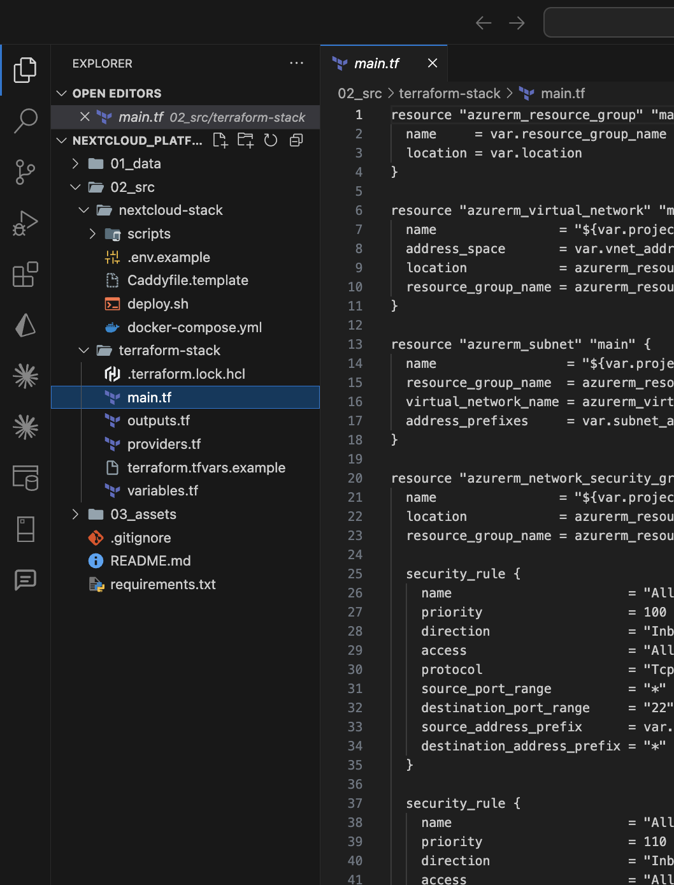
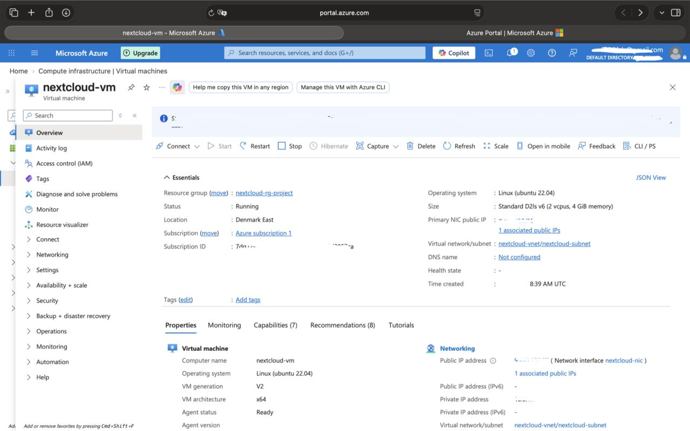
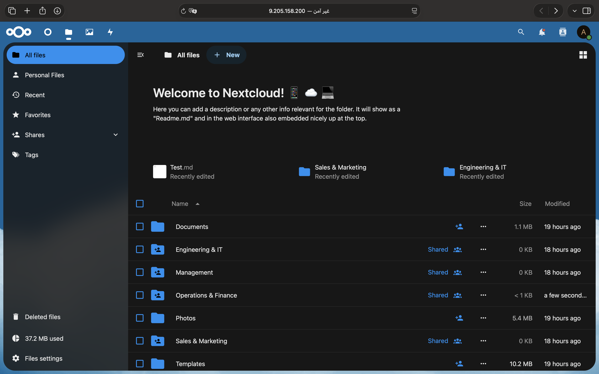
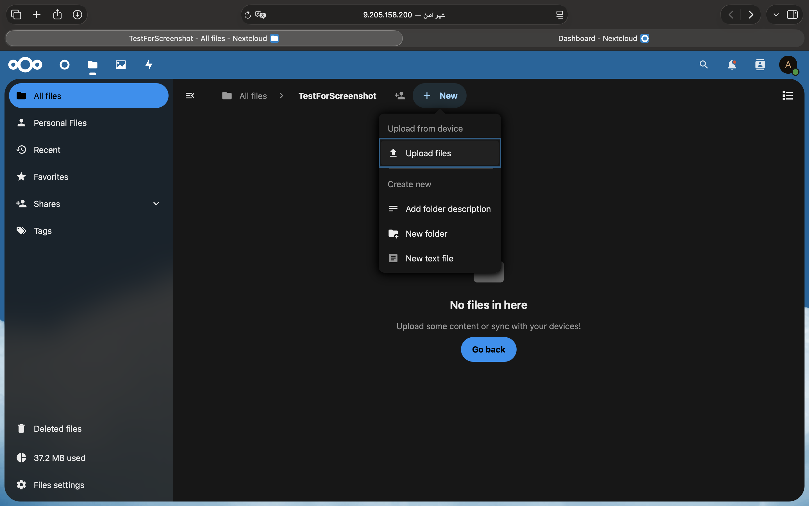
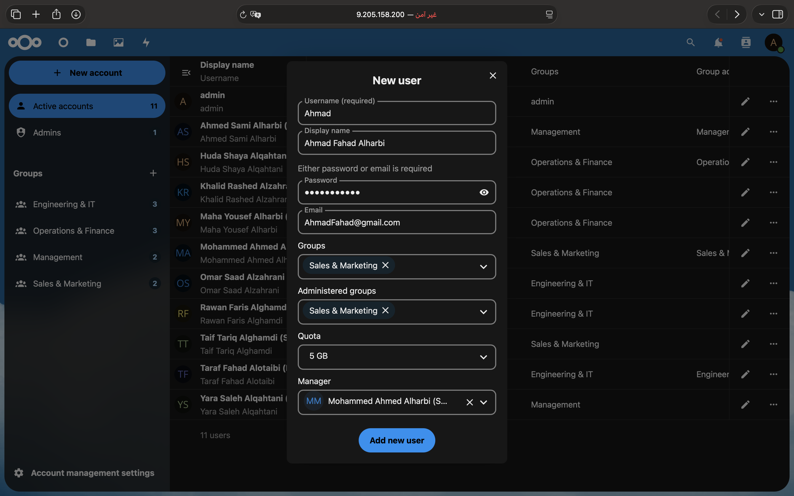

منصة سحابية لمشاركة الملفات والتعاون الداخلي، مبنية على Microsoft Azure ومصممة لتوفير بيئة مركزية وآمنة لإدارة الملفات والمستخدمين. A cloud-based file sharing and collaboration platform hosted on Microsoft Azure, providing a centralized environment for managing files, users, and access.
Cloud Infrastructure • Deployment • Automation
Azure • Terraform • Docker • Bash • Nextcloud
بناء منصة مركزية لمشاركة الملفات والتعاون الداخلي Build a centralized platform for internal file sharing and collaboration





يهدف المشروع إلى بناء منصة سحابية داخلية لمشاركة الملفات والتعاون بين الفرق، من خلال توفير بيئة مركزية لإدارة الملفات والمستخدمين والصلاحيات. تم بناء البنية التحتية باستخدام Terraform على Microsoft Azure، ثم تشغيل Nextcloud وخدماته المساندة باستخدام Docker وDocker Compose مع أتمتة عملية النشر باستخدام Bash. The project aims to build an internal cloud-based platform for file sharing and team collaboration, providing a centralized environment for managing files, users, and access permissions. The infrastructure was provisioned using Terraform on Microsoft Azure, while Nextcloud and its supporting services were deployed using Docker and Docker Compose with Bash-based deployment automation.
تم تشغيل منصة Nextcloud بنجاح على Azure، مع إمكانية تنظيم الملفات ومشاركتها، وإدارة المستخدمين والمجموعات والصلاحيات من خلال بيئة مركزية. Nextcloud was successfully deployed on Azure, enabling centralized file organization and sharing, along with user, group, and access management.